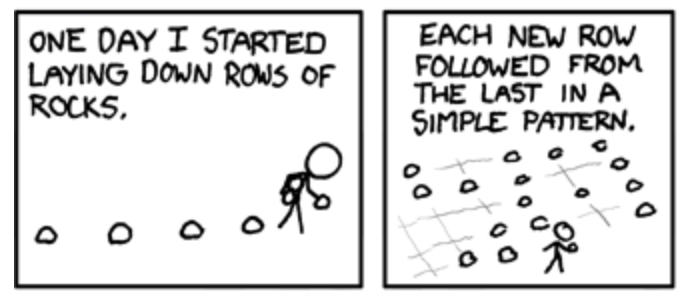
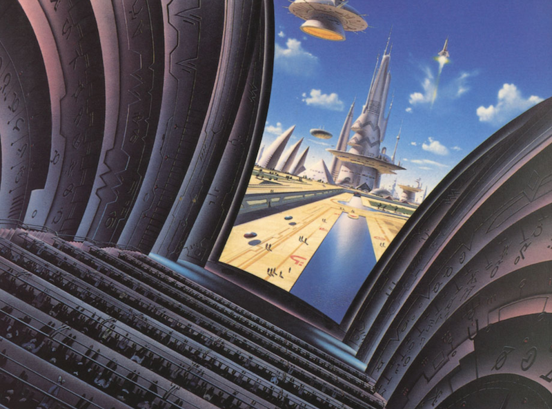

Nature of the Universe — a reading list
One of my favourite themes in fiction and philosophy is the “nature of the universe”. “What is the universe? Why is there anything at all? Why do we have three spatial dimensions? Why does time only move forward? What would a slightly different universe look like?”
These fundamental questions are inextricably linked with our human experience, as will become clear when exploring these works. “Who are we? What is consciousness? What is life? Why do we exist? Do we have free will? What is intelligence? What would an artificial intelligence look like? What is even real? What does it all mean?”
All these questions may seem out of reach, but they can be viewed with lots of interesting different lenses, such as mathematics, science (in particular physics, biology, and psychology), religion, philosophy, (science) fiction, art, engineering, and so on.
In this list I’ll share my favourite works around this theme — both fiction and non-fiction, and across different types of media. It’s a complete hodgepodge of works; not particularly organised. If you enjoy some of the same stuff, and have a recommendation for me, please let me know. I love to have my mind blown.
The Matrix
A classic. We can’t be talking about the nature of the universe without mentioning The Matrix. Explores themes of reality, artificial intelligence, simulation, identity, and more. A masterpiece of storytelling and cinematography.
Mr. Robot
A beautifully interwoven mesh of themes, including reality, identity, and determinism, but also other important topics, like power structures, mental illness, trauma, and justice. Plus realistic scenes of computer hacking, and some of the best characters and dialogue in cinema, ever.
Dark
Fantastic show about time travel, determinism, identity, and free will.
Day Break
Police detective meets Groundhog Day. Underrated.
Primer
Time travel cult classic on a shoestring budget.
Cloud Atlas
Incredible film adaptation of a book of the same name. About identity, fate, relationships, justice, and truth.
Inception
Fast-paced action film about nested realities, free will, and identity.
Devs
Somewhat flawed but beautiful show about simulation, physics, determinism, and tech megalomania. The only popular fiction I know that touches on quantum suicide/immortality.
The Infinite Computer
Short animation about simulation and determinism, adapted from I don't know, Timmy, being God is a big responsibility.
Upsilon Dies Backwards
Hilarious exploration of different kinds of life and consciousness, wrapped up in a few cute stories.
Jailbreaking the Simulation
Funny explanation of the Simulation Argument, including some related musings about hacking, video games, and religion. Also touches on the Unmoved Mover. And tigers.
The Feynman Series – Curiosity
About complexity, emergent behaviour, religion, and discovering truth.
Why does the universe exist?
Flawed, but entertaining overview of this question.
The Hitchhiker's Guide to the Galaxy
Sci-fi series in different media, which touches on determinism, universal questions, physics, alternate realities, time travel, and more.
Identity in Space
Thoughtful analysis of the fantastic sci-fi movie Ghost in the Shell, talking about identity, consciousness, time versus space, and how we relate to our environments and history.
You Are A Strange Loop
Short documentary adaptation of I Am A Strange Loop, about the concept of “self”, and consciousness.
Sentient uber-species & people in cars
A weird little clip that I extracted from the documentary “Cybertopia”. The clip talks about consciousness, and if we have already constructed a larger consciousness.
What is life
Lecture about how the existence of life itself may be explained from fundamental physics.
Conway’s Backgammon Argument
My favourite part of Conway’s Free Will Theorem (video) — which is fascinating in its own right — that deals with determinism versus randomness.

A Bunch of Rocks
Comic about simulation, determinism, and the nature of the universe in general.

Permutation City
Sci-fi book about simulation, identity, and why anything exists at all. The “Dust Theory” mentioned in the book is similar to the mathematical universe hypothesis.
Artificial Intelligence Podcast
Interviews with leading thinkers about artificial intelligence, science, and other subjects, which frequently touches on the nature of the universe and related questions.
Honourable mentions
→ Simulation, Consciousness, Existence
→ Twelve Monkeys
→ Arrival
→ The Truman Show
→ Lola rennt
→ Why is There Something Instead of Nothing?
→ How new technology becomes the metaphor for everything
→ Free will in antiquity
→ Cogito, ergo sum